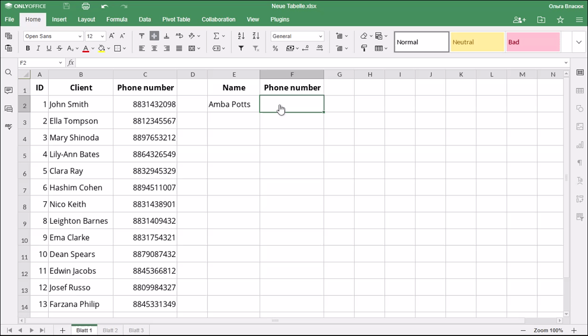

LOOKUP funkcija
LOOKUP funkcija je jedna od funkcija za pretragu i referencu. Koristi se za vraćanje vrednosti iz odabranog opsega (reda ili kolone sa podacima sortiranih uzlazno).
Sintaksa
LOOKUP(lookup_value, lookup_vector, [result_vector])
LOOKUP funkcija ima sledeće argumente:
| Argument | Opis |
|---|---|
| lookup_value | Vrednost koju tražite. |
| lookup_vector | Jedan red ili kolona koji sadrži podatke sortirane uzlazno. |
| result_vector | Jedan red ili kolona podataka iste veličine kao lookup_vector. |
Napomene
Funkcija traži lookup_value u lookup_vector i vraća vrednost sa iste pozicije u result_vector.
Ako je lookup_value manja od svih vrednosti u lookup_vector, funkcija će vratiti grešku #N/A. Ako ne postoji vrednost koja tačno odgovara lookup_value, funkcija bira najveću vrednost u lookup_vector koja je manja ili jednaka traženoj vrednosti.
Kako primeniti LOOKUP funkciju.
Primeri
Slika ispod prikazuje rezultat koji vraća LOOKUP funkcija.
